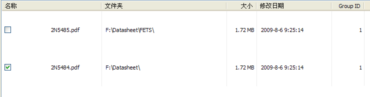

- 选择你要搜索的重复的东西.
- 自定义搜索参数 (可选)
- 选择用来搜索的文件夹.
- 搜索自定义类型 (可选) - 通过取消勾选 '所有支持的类型' 来自定义
- 点击搜索按钮并等待直到搜索完成
- 标记 / 勾选 文件 (你可以使用自动标记 ) 要删除或移动的项目.
注意 : 连续相同颜色的文件是重复的.
- 删除 或移动已标记的文件 .
注意 : 不成对的文件将被从列表中移除. 例如 :
如果我们删除了 2N5484.pdf, 2N5485.pdf 将被从列表中移除 (并非删除) 因为它不再有任何复制项目.
